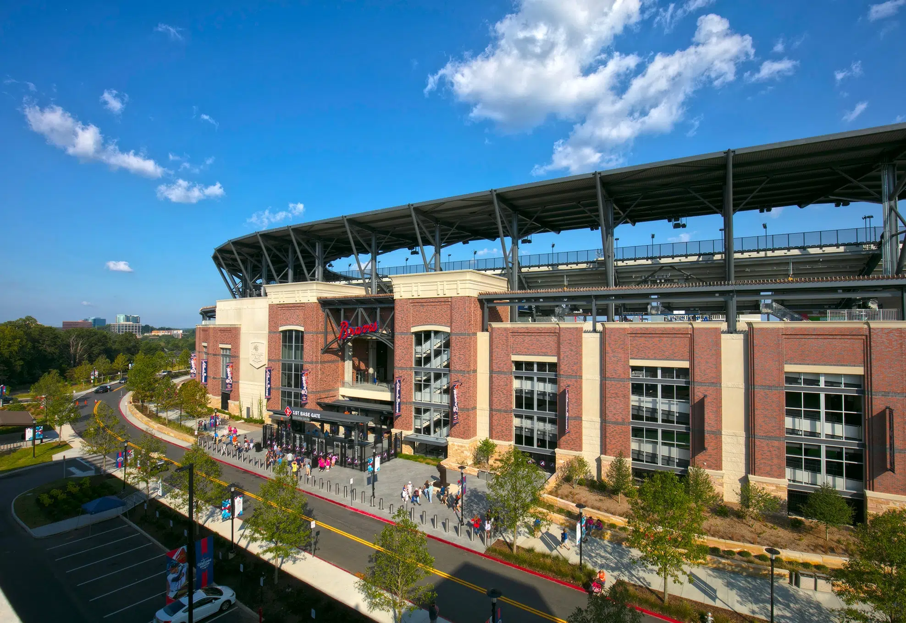
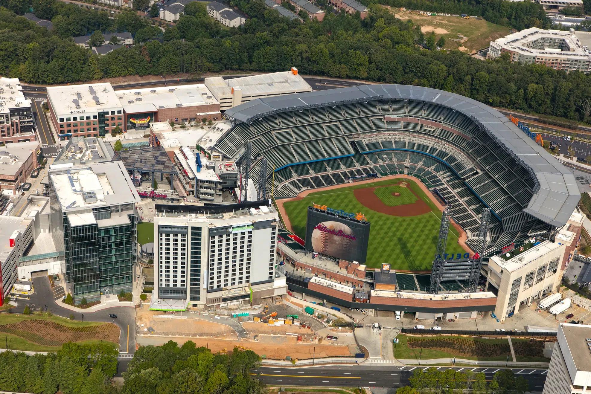

Purpose and audience
This website will be a beginner's guide to the Atlanta Braves. It is designed for those who may know little about the Braves or baseball but want to follow the team, understand the game, and become a Braves fan.
The goal of this website is to make learning about the Braves easy for people who know nothing about baseball. Unlike other sites that assume some prior knowledge, this one is designed for true beginners, breaking down every concept and tradition so anyone can understand and enjoy following the team.
Future pages or sections
Later in the semester, I plan to add new pages that explore different aspects of the Braves and their culture. To start, I will probably have a Braves Basics page to explain all the essential facts a new fan should know. This will lead to the Team History page, which features the key moments in Braves history like their four championships, Hall of Fame players, and important eras.
I also plan to add a Players to Know page, I will have profiles of franchise or famous players, both past and current, making it easier for new fans to recognize the names everyone talks about and put a face to them. I will also add a section for keeping up with the games, scores, standings, highlights, and roster updates.
Finally, there will be a page about the fan culture and traditions, Truist Park, rivalries, chants, uniforms, common fan phrases, and what makes Braves fans so passionate.
Truist Park


Truist Park is the home stadium of the Atlanta Braves.